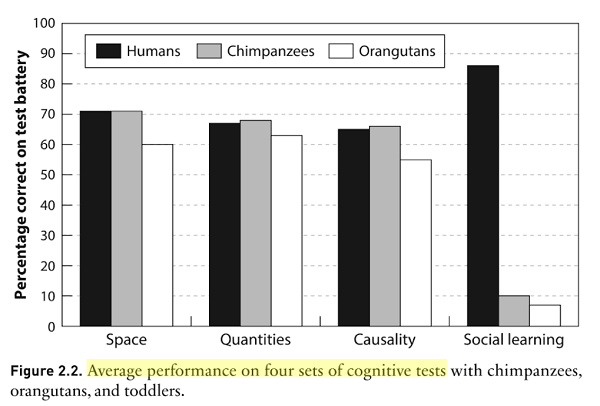

2019년 6월 4일
“문화가 인류 성공의 비결이다”라는 말은 세상에서 가장 공허한 논제처럼 들린다. 그럼에도 인류학자 조셉 헨리치(Joseph Henrich)의 우리 성공의 비결(The Secret Of Our Success)은 놀라운 책이 되는 데 성공했다.
헨리치(Henrich)는 인간이 순수한 지능 덕분에 성공했다는 대중적인 관점을 반박(혹은 최소한 명확히 정리)하고자 한다. 이 관점에 따르면, 인간은 생존을 돕고 낯선 환경에 적응하게 해줄 멋진 도구들을 발명해낼 만큼 충분히 똑똑한 존재이다.
이러한 이론들에 반대하여 말하자면, 우리는 실제로 그렇게 할 수 없다. 헨리치(Henrich)는 낯선 환경에 고립된 유럽 탐험가들의 수많은 이야기를 통해 독자들을 안내한다. 이 탐험가들은 대개 굶어 죽었다. 끝없는 풍요 속에서 굶어 죽은 것이다. 어떤 이들은 이누이트(Inuit)족이 가장 풍요로운 사냥터 중 하나로 꼽는 북극 땅에 있었다. 또 어떤 이들은 식용 식물과 동물이 가득한 정글 속에 있었다. 특히 운이 없었던 한 집단은 앨라배마(Alabama)에 있었는데, 이들은 현지 인디언들에게 붙잡혀 노예가 되지 않았더라면 완전히 전멸했을 것이다.
이 탐험가들은 우리의 호미닌(hominid) 조상들에 비해 많은 이점을 가지고 있었다. 우선, 탐험대는 전원 신체적 전성기에 있는 강건한 젊은 남성들로만 구성되어 있었기에 여성이나 아이, 노인을 부양할 필요가 없었다. 이들은 대개 교육 수준과 지능을 고려해 선발되었다. 또한 이들 중 상당수는 다윈(Darwin)과 골턴(Galton) 같은 천재들이 넘쳐났던, 역사상 가장 성공적인 문명 중 하나인 빅토리아 시대 영국 출신이었다. 대부분은 야생 기술과 생존법에 관한 과거 경험도 어느 정도 갖추고 있었다. 하지만 그 뛰어난 두뇌에도 불구하고, 정작 우리의 거대한 뇌가 진화한 목적이라고 여겨지는 과업, 즉 야생 환경에서 어떻게 수렵 채집을 해야 하는지를 알아내는 일에 직면하자 그들은 한심할 정도로 처참하게 실패했다.
그들이 실패했다는 사실 또한 놀라운 일이 아니다. 수렵 채집은 실제로 매우 어렵기 때문이다. 이누이트(Inuit)가 물개를 사냥하는 방식에 대한 헨리히(Henrich)의 설명은 다음과 같다.
우선 얼음 속에 뚫린 바다표범의 숨구멍을 찾아야 한다. 구멍 주변이 눈으로 덮여 있는 것이 중요한데, 그렇지 않으면 바다표범이 당신의 소리를 듣고 사라져 버릴 것이기 때문이다. 그다음 구멍을 열고, 여전히 사용 중인 구멍인지 확인하기 위해 냄새를 맡는다(바다표범은 대체 어떤 냄새가 날까?). 그런 다음 특별하게 굽은 카리부(caribou) 뿔 조각을 이용해 구멍의 형태를 가늠한다. 이제 구멍을 다시 눈으로 덮되, 윗부분에만 작은 틈을 남기고 그 위에 표시기를 얹어둔다. 바다표범이 구멍으로 들어오면 표시기가 움직이는데, 이때 당신은 온 체중을 실어 보이지 않는 구멍 속으로 작살을 내리꽂아야 한다. 작살의 길이는 약 1.5미터(5피트)여야 하며, 끝부분은 분리 가능해야 하고 튼튼하게 꼬인 힘줄 끈으로 연결되어 있어야 한다. 작살에 쓸 뿔은 앞서 언급한 카리부에게서 얻을 수 있으며, 그 카리부는 당신이 표류목으로 만든 활로 잡은 놈이어야 한다.
작살 뒷부분의 송곳은 매우 단단한 북극곰 뼈로 만든다(그렇다, 북극곰을 죽이는 법도 알아야 한다. 굴속에서 낮잠 자는 곰을 잡는 것이 최선이다). 작살촉을 바다표범에게 꽂아 넣었다면, 이제 놈을 얼음 위로 끌어올리기 위한 격렬한 레슬링 한 판이 시작된다. 일단 끌어올리는 데 성공하면 앞서 말한 곰 뼈 송곳으로 숨통을 끊으면 된다.
이제 바다표범을 손에 넣었으니 요리를 해야 한다. 하지만 이 위도에는 땔감으로 쓸 나무가 없으며, 표류목은 너무 희귀하고 귀해서 일상적으로 불을 피우는 데 쓸 수 없다. 안정적으로 불을 피우려면 활석(soapstone, 어떻게 생겼는지 알고 있겠지?)을 깎아 램프를 만들고, 바다표범의 지방에서 램프용 기름을 추출하며, 특정 종류의 이끼로 심지를 만들어야 한다. 물도 필요할 것이다. 유빙은 얼어붙은 소금물이라 그대로 마시면 탈수 증상만 더 심해질 뿐이다. 하지만 오래된 해빙은 염분의 대부분이 빠져나가 있어 녹여서 식수로 사용할 수 있다. 물론 색깔과 질감을 보고 오래된 해빙을 찾아내고 식별할 수 있어야 한다. 그리고 그것을 녹이려면, 활석 램프에 넣을 기름이 충분한지 확인해야 할 것이다.
고립된 탐험가들이 이 모든 것을 알아내지 못한 것은 놀라운 일이 아니다. 오히려 놀라운 점은 이누이트(Inuit)들이 그것을 해냈다는 사실이다. 북극은 인간이 살기에 유독 가혹한 곳이지만, 헨리히(Henrich)는 이 정도 수준의 복잡성을 가진 수렵 채집 기술이 어디에서나 일반적이라는 점을 분명히 한다. 티에라 델 푸에고(Tierra del Fuego)의 인디언들이 화살을 만드는 방식은 다음과 같다.
푸에고(Fuegians) 부족 사이에서 화살 하나를 만드는 데는 7가지의 서로 다른 도구를 사용해 6가지의 서로 다른 재료를 다루는 14단계의 절차가 필요하다. 그 단계 중 일부는 다음과 같다.
- 먼저 화살대의 나무를 고르는 것으로 시작하는데, 가급적이면 덤불 형태의 상록 관목인 차우라(chaura) 나무를 사용한다. 이 나무는 튼튼하고 가볍지만, 뒤틀린 가지를 펴는 데 엄청난 공이 들어가기 때문에 직관적인 선택은 아니다(처음부터 더 곧은 가지로 시작하면 안 되는 걸까?).
- 나무를 가열한 뒤 장인의 치아를 이용해 곧게 펴고, 마지막으로 스크레이퍼(scraper)로 마무리한다. 그다음, 미리 가열하여 홈을 판 돌을 이용해 화살대를 홈에 밀어 넣고 앞뒤로 문지르는데, 이때 여우 가죽 조각으로 꾹 눌러준다. 여우 가죽에 가루가 배어들면 연마 단계 준비가 끝난다(꼭 여우 가죽이어야만 할까?).
- 해변에서 채집한 피치(pitch, 천연 수지) 조각을 씹어서 재와 섞는다(재를 넣지 않으면 어떻게 될까?).
- 그 혼합물을 가열된 화살대 양 끝에 바르고, 그 위에 다시 흰색 점토를 입혀야 한다(빨간색 점토는 안 될까? 꼭 가열해야만 하는 걸까?). 이렇게 해야 깃과 화살촉을 달 준비가 된다.
- 깃을 다는 데는 깃털 두 개가 사용되며, 가급적이면 고산 거위의 깃털을 쓴다(닭 깃털은 왜 안 될까?).
- 오른손잡이 궁수는 새의 왼쪽 날개 깃털을 사용해야 하며, 왼손잡이는 그 반대다(이게 정말 중요할까?).
- 깃털은 구아나코(guanaco)의 등 쪽 힘줄을 이용해 화살대에 묶는데, 그전에 물과 침으로 힘줄을 매끄럽고 얇게 만들어야 한다(앞서 말한 가죽을 얻으려고 죽인 그 여우의 힘줄을 쓰면 안 되는 걸까?).
다음은 화살촉인데, 이를 제작해 화살대에 부착해야 하며, 당연히 활과 화살통, 그리고 궁술 실력까지 필요하다. 하지만 대충 어떤 느낌인지 이해했을 거라 생각하므로 여기까지만 하겠다.
수렵 채집인들은 이 모든 것을 어떻게 알 수 있을까? 우리는 보통 이를 '문화'라는 단어로 요약한다. 그렇다면 문화는 어떻게 형성되었을까? 어떤 영리한 이누이트(Inuit)나 푸에고(Fuegian)인이 추론을 통해 알아낸 것이 아니다. 만약 그랬다면, 영리한 유럽 탐험가들 역시 추론을 통해 그것을 알아낼 수 있었을 것이다.
뻔한 답은 “문화적 진화(cultural evolution)”겠지만, 헨리치(Henrich) 역시 이 문구에서 신비로움을 걷어내는 능력에 있어서는 다른 이들보다 딱히 나을 게 없다. 시행착오가 수반되었을 것이고, 덜 성공적인 집단이나 개인이 더 성공적인 이들의 기술을 모방했을 것이다. 하지만 이것이 정말 만족스러운 설명이 될 수 있을까?
언어에 관한 장을 읽으며, 우리가 이미 이와 유사한 논리를 기본적으로 받아들이고 있다는 사실을 다시금 깨달았다. 언어는 어떻게 발명되었을까? 내가 이 질문에 특히 관심을 갖는 이유는 인공어 제작(conlanging) 커뮤니티와 짧게나마 교류해 보았기 때문이다. 이들은 톨킨(Tolkien)이 엘프어(Elvish)를 만든 것처럼, 취미로 혹은 판타지 세계관의 일부로 자신만의 언어를 구축하려는 사람들이다. 대부분의 사람은 이 작업에 형편없다. 그들이 만든 언어는 아예 사용할 수 없거나, 아니면 영어의 복제판에 불과하다. 톨킨처럼 이미 수년간의 정식 언어학 훈련을 받은 사람만이 그나마 봐줄 만한 결과물을 낼 수 있다. 그런데 원시 언어들이 동굴 속에 살던 원시인들에 의해 발명되었다고 말하는 것인가? 원시 인도-유럽어(Proto-Indo-European) 유목민 위원회가 모여 굴절어(inflecting tongue)를 쓸지 교착어(agglutinating tongue)를 쓸지 투표라도 했겠는가? 감탄사를 발견하고는 "유레카!"라고 외치며 동굴 밖으로 뛰쳐나온 사람이 단 한 명이라도 있었겠는가? 우리는 그저 원시인들이 서로 소통하기 위해 정말 열심히 노력한 끝에, 인류가 만들어낸 가장 복잡하고 경이로운 산물 중 하나인 언어가 어느 순간 그냥 '생겨났다'고 받아들일 뿐이다.
(생물학적 진화에 대해서도 나는 비슷하게 느낀다. 시행착오만으로 어떻게 눈이라는 기관을 진화시킬 수 있단 말인가? 그 정확한 과정에 대해 추측하는 논문들을 읽어보았고, 그 논문들이 타당한 지적을 많이 한다는 점도 인정한다. 하지만 여전히 "아, 당연히 이렇게 되겠구나!"라고 느껴질 만큼 납득이 가지는 않는다. 어느 시점에 이르면, 그저 진화가 나보다 똑똑하며, 내가 가능하다고 생각했던 수준보다 훨씬 더 똑똑하다는 사실을 받아들여야만 한다.)
문화의 생성은 이러한 신비로운 과정의 부수적인 결과라고 보고, 헨리치(Henrich)는 그 전승 과정으로 시선을 돌린다. 문화적 생성이 일정 비율로 일어난다고 가정한다면, 전승의 충실도가 해당 사회의 발전, 정체, 혹은 쇠퇴 여부를 결정짓게 된다.
헨리히(Henrich)에 따르면, 인간이 단순한 원숭이의 일종을 넘어서기 시작한 시점은 우리가 높은 충실도로 문화를 전수하기 시작했을 때이다. 일부 인류학자들은 마키아벨리적 지능 가설(Machiavellian Intelligence Hypothesis)—인간이 사회적 책략을 부리고 지배 계층의 위계로 올라가는 데 성공하기 위해 큰 뇌를 진화시켰다는 이론—에 대해 이야기한다. 이에 맞서 헨리히는 자신만의 문화적 지능 가설을 제시한다. 즉, 인간은 이누이트(Inuit)의 물개 사냥 기술과 같은 것들을 유지하기 위해 큰 뇌를 진화시켰다는 것이다. 우리를 유인원과 구분 짓는 모든 것은 이러한 종류의 문화를 유지하고, 활용하며, 혹은 이러한 문화가 우리에게 부여한 새로운 능력에 적응하도록 설계된 진화적 패키지의 일부이다.
시크릿(Secret)은 문화 관련 적응의 수많은 사례를 제시하며, 그 모든 것이 뇌 속에서만 일어나는 일은 아니라는 점을 보여준다.
우리의 소화 기관은 문화와 함께 진화했다. 구체적으로 말하자면, 소화 기관은 이례적일 정도로 왜소하게 진화했다.
우리의 입 크기는 몸무게가 3파운드도 안 되는 다람쥐원숭이(squirrel monkey) 수준이다. 침팬지는 우리보다 입을 두 배나 더 크게 벌릴 수 있으며, 입술과 커다란 치아 사이에 상당한 양의 음식을 압축해 넣을 수 있다. 또한 우리의 턱 근육은 보잘것없어서 겨우 귀 바로 아래까지만 닿는다. 반면 다른 영장류의 턱 근육은 머리 꼭대기까지 뻗어 있으며, 때로는 중앙의 뼈 능선에 고정되어 있기도 하다. 위장 또한 작아서 우리 정도 크기의 영장류에게 기대되는 표면적의 3분의 1밖에 되지 않으며, 결장 역시 예상 질량의 60% 수준으로 너무 짧다.
다른 동물들과 비교했을 때, 인간의 소화 기관은 너무나 퇴화해 있어서 원래대로라면 생존이 불가능할 정도다. 우리를 구원한 것은 무엇일까? 바로 모든 음식 가공 기술, 특히 요리를 비롯해 다지기, 헹구기, 끓이기, 그리고 불리기 같은 방법들이다. 우리는 음식이 입에 들어가기도 전에 소화 과정의 상당 부분을 이미 처리해 둔 셈이다. 우리의 문화는 "불 위에 올려 익혀 먹어라" 같은 포괄적인 방식부터 "이 식물은 독소를 제거하기 위해 24시간 동안 물에 담가두어야 한다" 같은 구체적인 방식까지, 이러한 기술을 우리에게 가르쳐 준다. 문화마다 지역 식물과 동물에 특화된 고유의 요리 지식이 있다. 유럽 탐험가들이 자주 겪었던 사망 원인 중 하나는 영양분을 전혀 끌어내지 못하는 방식으로 음식을 요리한 탓에, 겉으로는 배불리 먹고 있으면서도 실제로는 굶어 죽는 것이었다.
불은 특히 중요한 식품 가공 혁신이며, 이는 전적으로 문화적으로 전승된다. 헨리치(Henrich)는 이 점을 강조하는 데 있어 다소 잔인한 면이 있다. 그는 독자들에게 직접 밖으로 나가 불을 지펴보라고 권한다. 심지어 부싯돌을 사용하라거나, 어떤 이들에게는 나뭇가지 두 개를 서로 문지르는 방식이 통한다는 식의 유용한 힌트까지 제공한다. 그는 당신이 대부분의 호미닌(hominid) 조상들보다 훨씬 높은 IQ를 가졌음에도 불구하고 결코 성공하지 못할 것이라고 예측하는데, 내가 불운한 캠핑객들에게 들은 이야기들이 이를 뒷받침한다. 실제로 일부 집단(가장 대표적으로 태즈메이니아 원주민들)은 불을 만드는 능력을 상실했으며, 이를 다시는 재발견하지 못한 것으로 보인다. 불을 만드는 법은 아주 적은 횟수, 어쩌면 단 한 번 발견되었으며, 그 이후로 문화적으로 전승되어 온 것이다.
하지만 단순히 재료를 썰거나 굽는 수준의 문제가 아니다. 전통적인 식품 가공 기술은 임의로 복잡해질 수 있다. 비타민 결핍을 막기 위해 필수적인 옥수수의 닉스타말화(Nixtamalization, 알칼리 용액에 옥수수를 담가 처리하는 공정)는 옥수수를 갈아 넣은 조개껍데기 태운 용액에 담그는 과정을 포함한다. 고대 멕시코인들은 이 방법을 발견했고, 수천 년 동안 옥수수만으로도 충분히 잘 살아남았다. 하지만 정복자들이 들어왔을 때, 그들은 이 과정을 무시하고 옥수수를 그냥 먹었다. 이후 400년 동안 유럽인과 미국인들은 닉스타말 처리를 하지 않은 옥수수를 먹었다. 공식 통계에 따르면, 이 기간 동안 300만 명의 미국인이 옥수수 관련 비타민 결핍증을 앓았고, 최대 10만 명이 사망했다. 서구 과학자들이 어떤 비타민이 관여하는지 발견하고, 옥수수를 안전하게 만드는 산업적 버전의 닉스타말화 공정을 개발한 것은 1937년이 되어서였다. 1900년대 초반의 미국인들은 매우 똑똑했으며 고대 멕시코인들에 비해 많은 이점을 가지고 있었다. 하지만 고대 멕시코의 문화는 서구인들이 따라잡는 데 수세기가 걸린 이 문제를 정확히 해결하고 있었다.
우리의 손과 사지 또한 문화와 함께 진화했다. 어떤 분야에서는 비약적인 발전을 이루었다. 영겁의 시간 동안 도구를 사용한 결과, 우리의 손은 정교함 면에서 다른 어떤 유인원보다 월등해졌다. 반면, 더 이상 필요하지 않게 된 체계들은 퇴화하기도 했다. 우리는 다른 어떤 유인원보다 훨씬 약하다. 헨리히(Henrich)는 1940년대의 한 서커스 공연에 대해 설명하는데, 당시 단장은 관객 중 힘센 남성들에게 어린 침팬지와 레슬링 경기를 하라고 도전장을 내밀었다고 한다. 침팬지는 몸이 묶여 있었고, 물지 못하도록 마스크를 썼으며, 할퀴지 못하도록 부드러운 장갑을 끼고 있었다. 그럼에도 그 어떤 인간도 5초 이상 버티지 못했다. 다른 유인원들과의 공통 조상으로부터 이어져 온 우리의 신체 능력은, 우리가 우위를 점하기 위해 인공적인 무기에 점점 더 의존하게 됨에 따라 갈수록 약해진 것이다.
우리의 땀샘조차 문화와 함께 진화했다. 인간은 지구력 사냥꾼(persistence hunters)이다. 가젤만큼 빨리 달릴 수는 없지만, 가젤(혹은 거의 그 어떤 동물)보다 더 오래 달릴 수 있다. 우리는 왜 그런 생태적 지위(niche)로 진화했을까? 그 비밀은 물을 운반하는 능력에 있다. 모든 수렵 채집 문화는 저마다의 물 운반 기술, 대개는 일종의 물주머니를 발명했다. 덕분에 인간은 발한 기반의 냉각 시스템으로 전환할 수 있었고, 이는 곧 원하는 만큼 오래 달릴 수 있는 능력으로 이어졌다.
하지만 다른 유인원들과 우리 사이의 차이점 대부분은 실제로 뇌에 있다. 다만 그 차이가 당신이 예상하는 곳에 있지 않을 뿐이다.
토마셀로(Tomasello) 연구팀은 인간 유아와 유인원을 대상으로 일련의 전통적인 IQ 유형 문제들을 테스트했다. 대결 양상은 놀라울 정도로 팽팽했다. 기억력, 논리력, 공간 추론 같은 영역에서 세 종은 거의 비슷한 성적을 거두었다. 하지만 타인으로부터 배우는 능력에 있어서만큼은, 인간이 다른 두 유인원 종을 완전히 압도했다.

기억하자. 헨리히(Henrich)는 문화가 무작위적인 돌연변이를 통해 축적된다고 생각한다. 인간은 문화가 생성되는 방식에 대해서는 통제권이 없다. 다만 그 문화가 다음 세대로 얼마나 전달되는지에 대해서는 더 많은 통제권을 가진다. 만약 100%가 전달된다면, 돌연변이가 계속해서 축적됨에 따라 문화는 점점 더 발전하게 된다. 반면 100% 미만이 전달된다면, 어느 시점에서 새로 얻은 문화와 소실된 문화가 평형 상태에 이르게 되고, 사회는 특정 수준의 높거나 낮은 기술 단계에서 안정화된다. 이는 문화를 다음 세대로 전달하는 능력이 어쩌면 인간의 핵심 기술일지도 모른다는 것을 의미한다. 인간의 뇌는 이 과정이 최대한 효율적으로 작동하도록 최적화되어 있다.
인간 아이들은 무언가를 배우는 것에 집착한다. 그리고 무작위로 배우는 것이 아니다. 이른바 ‘문화적 학습의 편향(biases in cultural learning)’, 즉 유아의 마음속에는 지식으로 채워져야 한다고 인식하는 일종의 ‘슬롯’이 있으며, 아이들은 그 슬롯을 채우는 데 필요한 지식을 우선적으로 찾아다니는 것으로 보인다.
한 가지 슬롯은 언어를 위한 것이다. 인간 아이들은 자연스럽게 말을 듣는다(이르면 자궁 속에서부터). 아이들은 자신이 생성하고 구별할 수 있는 음소들을 주변 언어에 맞는 것들로 자연스럽게 쳐낸다. 그리고 언어 학습은 똑똑한 성인에게조차 어려운 일임에도 불구하고, 아이들은 사람들이 하는 말을 어떻게 이해하고 말해야 하는지를 자연스럽게 깨우친다.
또 다른 빈자리는 동물들의 몫이다. 거대 동물군(megafauna)이 동물원으로 밀려난 세상에서도, 우리는 여전히 아이들에게 "L은 사자(lion)", "B는 곰(bear)"이라며 알파벳을 가르치고, 아이들은 여전히 개구리 씨와 뱀 부인이 티 파티를 여는 그림책을 읽는다. 헨리히(Henrich)는 어린 뇌가 언어를 배우고 싶어 하도록 하드코딩되어 있듯이, 주변의 동물 생태를 배우고 싶어 하도록 하드코딩되어 있다고 제안한다. (어쩌면 어린 소년들의 탈것에 대한 집착은 여기서 비롯된 것일지도 모른다. 버스와 기차야말로 그들이 마주칠 수 있는 지역 거대 동물군에 가장 가까운 존재일 테니까!)
또 다른 자리는 식물들의 몫이다.
이 시스템이 어떻게 작동하는지 살펴보기 위해, 영유아가 낯선 식물에 어떻게 반응하는지 생각해보자. 식물에는 가시, 유해한 기름, 쐐기풀, 위험한 독소 등이 가득하며, 이는 모두 우리 같은 동물이 함부로 건드리지 못하도록 유전적으로 진화한 결과다. 인류의 광범위한 지리적 분포와 식물을 식량, 약재, 건축 자재로 다양하게 사용해 온 점을 고려하면, 우리는 식물에 대해 학습하는 동시에 그 위험을 피하도록 준비되어 있어야 한다. 심리학자인 애니 워츠(Annie Wertz)와 카렌 윈(Karen Wynn)은 이 아이디어를 실험실에서 탐구하기 위해, 생후 8개월에서 18개월 사이의 영유아들에게 새로운 식물(바질과 파슬리)과 인공물(새로운 물건 및 나무 숟가락, 작은 램프 같은 흔한 물건들)을 만져볼 기회를 주었다.
결과는 놀라웠다. 연령과 관계없이 많은 영유아가 식물을 만지는 것을 단호히 거부했다. 식물을 만지더라도 인공물을 만질 때보다 훨씬 더 오래 망설였다. 반면, 생전 처음 보는 물건일지라도 인공물에 대해서는 이러한 주저함을 전혀 보이지 않았다. 이는 영유아가 돌이 되기도 전에 식물과 다른 사물을 쉽게 구별할 수 있으며, 식물에 대해 주의를 기울이도록 설정되어 있음을 시사한다. 그렇다면 이들은 어떻게 이러한 보수적인 성향을 극복하는 것일까?
답은 영유아가 다른 사람들이 식물을 어떻게 다루는지 예리하게 관찰하며, 다른 사람이 만지거나 먹은 식물만을 만지거나 먹으려는 경향이 있다는 것이다. 실제로 문화적 학습을 통해 '허가'를 받고 나면, 이들은 갑자기 식물을 먹는 것에 관심을 보인다. 이를 탐구하기 위해 애니와 카렌은 영유아들에게 모델이 식물에서 과일을 따는 모습과, 식물과 크기 및 모양이 비슷한 인공물에서 과일처럼 생긴 물건을 따는 모습을 동시에 보여주었다. 모델은 과일과 과일 같은 물건 모두를 입에 넣었다. 그다음 영유아들에게 (식물에서 딴) 과일과 (물건에서 딴) 과일 같은 물건 중 하나를 선택하게 했다. 75% 이상의 영유아가 과일 같은 물건이 아닌 과일을 선택했는데, 이는 문화적 학습을 통해 '허가'를 받았기 때문이다.
확인을 위해, 이번에는 모델이 과일이나 과일 같은 물건을 입이 아닌 귀 뒤에 꽂는 모습을 보여주었다. 이 경우 영유아들은 과일과 과일 같은 물건을 거의 동일한 비율로 선택했다. 식물은 먹을 수 있을 때 가장 흥미로운 대상이 되지만, 그것이 독성이 없다는 문화적 학습 단서가 있을 때만 그렇다는 것이다.
2013년 예일(Yale) 대학교를 방문했을 때 애니로부터 그녀의 연구에 대해 처음 듣고 나서, 나는 집에 돌아와 6개월 된 아들 조쉬(Josh)를 대상으로 이를 테스트해 보았다. 조쉬는 무엇이든 손에 잡히는 대로 즉시 입으로 가져가는 아이였기에, 애니의 엄격한 실증적 연구 결과를 뒤집어버릴 가능성이 매우 커 보였다. 엄마 품에 편안하게 안겨 있는 조쉬에게 나는 먼저 낯선 플라스틱 큐브를 내밀었다. 조쉬는 망설임 없이 그것을 덥석 잡아 입속으로 밀어 넣으며 즐거워했다. 그다음, 나는 루콜라(arugula) 한 줄기를 내밀었다. 조쉬는 재빨리 그것을 잡았지만, 이내 멈칫하더니 호기심 어린 불확실한 표정으로 그것을 바라보았다. 그리고는 천천히 손에서 그것을 놓으며 엄마를 껴안기 위해 몸을 돌렸다.
여기서 심리적 기제가 얼마나 풍부하게 작동하고 있는지 짚어볼 필요가 있다. 영유아는 식물이 비슷한 크기, 모양, 색깔의 사물과 다르다는 것을 인식해야 할 뿐만 아니라, 바질이나 파슬리 같은 식물의 유형에 대한 범주를 만들어야 하며, 단순히 '만지는 것'과 '먹는 것'을 구분해야 한다. 누군가 바질을 먹는 것을 보고 '식물은 먹어도 좋다'라고 부호화하는 것은 큰 도움이 되지 않는다. 그렇게 되면 바질뿐만 아니라 독초까지 먹게 될 수 있기 때문이다. 그렇다고 해서 그 관찰 내용을 '저 특정한 바질 줄기는 먹어도 좋다'라고 좁게 부호화하는 것 역시 도움이 되지 않는다. 왜냐하면 그 특정한 줄기는 방금 관찰 대상자가 먹어버렸기 때문이다. 이것이 바로 문화적 학습에 존재하는 또 다른 내용 편향(content bias)이다.
이는 무엇이 식용 가능한지를 파악하는 더 일반적인 현상과 연결된다. 대부분의 서구인은 곤충이 식용이 아니라고 배우지만, 일부 아시아인들은 식용이라고 배운다. 이는 단순히 누군가 곤충은 먹는 게 아니라고 말해서 그것을 믿게 되는 것보다 더 깊은 차원의 문제처럼 느껴진다. 내가 태국에 있을 때, 가이드가 거대한 귀뚜라미 한 마리를 내밀며 맛있다고 권했다. 나는 그것이 먹어도 안전하다는 그의 말은 믿었고, 그에게는 맛이 좋다는 말조차 믿었지만, 결국 나의 조건반사가 이겼다. 나는 그 귀뚜라미를 먹지 않았다. 아이의 뇌가 해당 지역에서 무엇이 식용이고 무엇이 아닌지를 학습한 뒤, 이를 미래의 변화에 저항하도록 하드코딩하는 어떤 과정이 존재하는 듯하다.
(그들이 그렇게 말하더군요. 저 역시 새우를 전혀 못 먹거든요.)
또 다른 슬롯은 성 역할의 몫이다. 아이들이 성별이라는 개념에 전혀 노출되지 않도록 키우려 했던 진보주의자들의 이야기는 이제 우리 모두가 들어봤을 것이다. 그들의 실패는 때때로 성별이 하드코딩되어 있다는 증거로 받아들여지기도 했다. 하지만 상황이 그렇게 단순할 수는 없다. '소녀=분홍색'과 같은 일부 현대적 성 역할은 결코 당연하거나 보편적인 것이 아니기 때문이다. 그보다는 아이들에게 성 역할이 들어갈 하드코딩된 슬롯이 있고, 아이들은 (부모가 혼란을 주려 해도) 지역 사회의 성 역할이 무엇인지 알아내기 위해 부단히 노력하며, 일단 그것을 포착하면 절대 놓지 않는 것처럼 보인다.
문화 지능 가설(Cultural Intelligence Hypothesis)에 따르면, 인간은 문화와 필수적 공생 관계를 맺으며 살아간다. 연계된 문화가 없는 뇌는 불완전하며 그리 유용하지도 않다. 따라서 영유아의 뇌는 태어날 때부터 주변 문화의 중요한 요소들을 찾아내어 이를 적절한 빈칸에 채워 넣음으로써 온전한 상태가 되도록 적응해 있다.
책의 다음 부분에서는 아동기 이후의 학습에 대해 다룬다. 이는 수렵 채집 부족에서 중요한 역할을 한다.
사냥꾼의 근력과 속도는 20대에 정점에 도달하지만, 개별적인 사냥 성공률은 30세 무렵이 되어서야 정점에 이른다. 이는 사냥의 성공이 신체적 능력보다는 노하우와 정교한 기술에 더 많이 의존하기 때문이다.
이 책의 이 부분은 이누이트(Inuit)의 바다표범 사냥 전략과 같은 사례들과 결합했을 때 가장 설득력이 있었는데, 이는 수렵 채집이 얼마나 복잡하고 어려운 일이었는지를 뼈저리게 느끼게 해주었다. '보이스카우트'보다는 '박사 학위'에 가까운 수준이라고 생각하라. 원시 부족민의 삶은 다양하고 복잡한 기술과 숙련도를 마스터할 것을 요구한다. 그리고 '평범한 사냥꾼'과 '위대한 사냥꾼'의 차이는 높은 지위(그리고 좋은 짝짓기 기회)와 낮은 지위의 차이, 혹은 삶과 죽음의 차이가 될 수도 있다. 수렵 채집인들은 자신의 수렵 채집 생활 방식의 핵심을 정말로 배우고 싶어 하며, 그것을 배우는 것은 실제로 매우 어렵다. 그들의 휴리스틱(heuristics)은 다음과 같다.
무언가에 능숙하거나 널리 존경받는 사람들로부터 배워라. 지배 위계(dominance hierarchy)와 위신 위계(prestige hierarchy)의 차이에 대해 아직 읽어본 적이 없다면, 이 주제에 관한 케빈 심러(Kevin Simler)의 블로그 포스트를 확인해 보길 바란다. 사람들은 왕이나 추장 같은 권위자를 두려워하고 복종하지만, 무언가에 능숙해 보이는 사람들에게는 다른 종류의 존경, 즉 '위신'을 부여한다. 그리고 누가 정말 능숙한지 판단하기란 어렵기에(음악을 배우려는 비음악가가 단순히 잘하는 연주자와 세계 최고 수준의 연주자를 구분할 수 있을까?), 대부분의 사람은 타인이 존경하는 사람을 함께 존경한다는 휴리스틱(heuristic, 발견법)을 사용한다. 일단 누군가를 존경할 만한 사람으로 인식하고 나면, 당신은 그들의 거의 모든 것을 모방하려는 강한 충동을 느끼게 된다.
위신(prestige)을 하나의 사회적 현상으로 이해하려면, 무엇이 정확히 누군가를 성공하게 만드는지 파악하는 것이 종종 어렵다는 점을 깨닫는 것이 중요하다. 현대 사회에서 스타 NBA 농구 선수의 성공은 다음과 같은 요인들에서 기인할 수 있다.
- 비시즌 동안의 집중적인 연습
- 운동화 취향
- 수면 일정
- 경기 전 기도
- 특별한 비타민
- 당근에 대한 기호
이 중 어느 하나 혹은 전부가 그의 성공 가능성을 높였을 수 있다. 순진한 학습자는 개인의 관행과 성공 사이의 모든 인과 관계를 구별해낼 수 없다. 그 결과, 학습자들은 자신이 선택한 롤모델의 모습을 여러 영역에 걸쳐 광범위하게 모방하곤 한다. 물론 학습자들은 여러 이유로 롤모델의 성공과 인과적으로 더 밀접해 보이는 영역에 더 많은 비중을 둘 수 있다. 이러한 모방에는 롤모델의 목표와 동기뿐만 아니라 개인적인 습관이나 스타일까지 포함되는 경우가 많은데, 이 역시 성공과 연결되어 있을 가능성이 있기 때문이다. 이 "의심스러우면 일단 따라 하라"는 휴리스틱(heuristic)은 한 영역에서의 성공이 광범위한 영역의 영향력으로 전환되는 이유 중 하나다.
현대 사회의 방대한 유명인 광고 모델 사례들은 위신의 힘을 잘 보여준다. 예를 들어, 고등학교 졸업 후 바로 프로로 진출한 NBA 스타 르브론 제임스(Lebron James)는 스테이트 팜 보험(State Farm Insurance)의 광고 모델로 수백만 달러를 받는다. 그가 놀라운 농구 재능을 가졌다는 점은 분명하지만, 제임스 씨가 왜 보험사를 추천할 자격이 있는지는 불분명하다. 마찬가지로 마이클 조던(Michael Jordan)은 헤인즈(Hanes) 속옷을 입은 것으로 유명하며, 타이거 우즈(Tiger Woods)는 뷰익(Buick) 자동차를 몰았던 것으로 보인다. 비욘세(Beyonce)는 펩시(Pepsi)를 마신다(적어도 광고에서는 그렇다). 음악적 재능과 설탕이 든 콜라 음료 사이에 무슨 연관이 있단 말인가?
마지막으로, 새로운 의학적 발견이나 공공 교육 캠페인이 여성들의 예방 의학적 접근 방식에 영향을 주는 속도는 매우 점진적이다. 하지만 자신이 '결함이 있는' BRCA1 유전자를 가졌다는 사실을 알게 된 후 예방적 양측 유방 절제술을 받기로 한 결정을 설명한 안젤리나 졸리(Angelina Jolie)의 뉴욕 타임스(New York Times) 기고문 단 한 편은, 영국에서 뉴질랜드에 이르기까지 유방암 유전자 검사를 원하는 여성들로 클리닉을 가득 메우게 했다. 이처럼 원치 않는 진화적 부작용인 위신은 결과적으로 수백만 달러의 가치를 지니게 되었으며, 강력하면서도 제대로 활용되지 않은 공중 보건 도구가 되었다.
물론 이는 위신 폭포(prestige cascades)의 위험을 초래한다. 즉, 어떤 무관한 요소(헨리치(Henrich)는 리얼리티 쇼 스타가 되는 것을 예로 든다)가 누군가를 갑자기 유명하게 만들고, 모두가 그 사람에 대해 이야기하게 되며, 결국 머저리지(Muggeridge)가 정의한 유명인, 즉 '유명하다는 사실 그 자체로 유명한 사람'이 탄생하게 되는 것이다.
이런 점들은 진화론적 뿌리로 거슬러 올라가, 부족 내 최고의 사냥꾼이 가진 비결이 무엇인지 알아내려 그를 관찰하거나, 그가 자신을 거두어 무언가를 가르쳐 주길 바라는 마음으로 그에게 친절하게 대하는 상황을 상상해 보면 더 잘 이해된다.
(하지만 이 모든 것이 사실이라면, 유명인을 홍보대사로 기용하는 공익 캠페인은 엄청난 성공을 거둬야 하지 않을까? 정작 현실에서는, '승자는 마약을 하지 않는다'라고 초등학생들에게 훈계하도록 설득한 농구 선수가 얼마나 유명하든 상관없이 실패하는 경우가 허다하지 않은가?)
자신과 비슷한 사람들로부터 배워라. 만약 당신이 남자라면, 여성을 관찰하며 패션을 배우는 것은 아마 좋지 않은 생각일 것이다. 만약 당신이 하인이라면, 왕이 행동하는 방식을 관찰하며 에티켓 규칙을 배우는 것 또한 아마 좋지 않은 생각일 것이다. 사람들은 본능적으로 자신과 더 유사한 사람들로부터 배우려는 경향이 있다.
헨리치(Henrich)는 이를 흑인 학생은 흑인 교사에게, 여학생은 여성 교사에게 가장 잘 배운다는 등의 여러 연구 결과와 연결 짓는다.
노인들에게 배워라. 인간은 폐경을 겪는 거의 유일한 종이다. 대부분의 동물은 중년 후반에 죽을 때까지 계속해서 번식한다. 진화는 왜 인간이 번식 능력 없이도 생존하기를 원하는 것일까?
노인들은 이미 지역 문화를 습득했기에 이를 다른 이들에게 가르칠 수 있기 때문이다. 헨리히(Henrich)는 우리가 어르신들에 대해 가진 개인적인 경험을 모두 버려달라고 요청한다. 우리는 노인이 아마도 "시대에 뒤떨어진" 존재가 되기 쉬운, 급변하는 세상에 살고 있기 때문이다. 하지만 역사의 대부분의 기간 동안 변화는 빙하가 움직이듯 매우 느리게 일어났으며, 노인들은 평생에 걸쳐 유용한 지식을 축적했을 것이다. 실리콘 밸리(Silicon Valley)의 한 프로그래머가 코드의 특히 까다로운 버그 때문에 골머리를 앓다가, 해당 프로그래밍 언어에서 70년의 경력을 가진 할아버지에게 전화를 거는 상황을 상상해 보라.
때로는 중요한 사건이 한 세대에 단 한 번만 일어나기도 한다. 헨리히(Henrich)는 극심한 가뭄에 직면한 호주 원주민 부족의 이야기를 들려준다. 부족에서 가장 나이가 많은 파랄지(Paralji)를 제외하고는 아무도 어떻게 해야 할지 몰랐다. 그는 지난번 대가뭄을 겪었으며, 당시 자신의 어른들이 최후의 수단으로 물웅덩이를 어디서 찾아야 하는지 알려주었던 것을 기억하고 있었다.
이러한 역학은 다른 종들에게서도 동일하게 나타나는 것으로 보인다.
1993년, 탄자니아(Tanzania)에 심각한 가뭄이 닥치면서 약 200마리의 아프리카코끼리 개체군 중 새끼 코끼리의 20%가 폐사했다. 이 개체군은 21개의 서로 다른 가족으로 구성되어 있었으며, 각 가족은 단 한 마리의 가주(matriarch) 코끼리가 이끌고 있었다. 이 21개의 가족은 다시 3개의 씨족으로 나뉘었는데, 각 씨족은 우기에 같은 영역을 공유했다(즉, 서로를 알고 있었다). 이 코끼리들을 연구한 학자들이 새끼들의 생존율을 분석한 결과, 나이 많은 가주가 이끄는 가족일수록 가뭄 기간 동안 새끼의 폐사 수가 적었다는 사실을 발견했다.
게다가, 세 씨족 중 두 씨족은 가뭄 중에 예상치 못하게 공원을 떠났는데, 아마도 물을 찾기 위해서였을 것이다. 그리고 이 두 씨족은 공원에 남았던 나머지 한 씨족보다 생존율이 훨씬 높았다. 공교롭게도 이런 심각한 가뭄은 약 40~50년에 한 번꼴로 발생하며, 직전 가뭄은 1960년경에 있었다. 안타깝게도 그 이후 1970년대의 코끼리 밀렵으로 인해, 1993년 당시에 1960년의 가뭄을 기억할 만큼 충분히 나이가 들었을 코끼리들이 많이 죽었다. 하지만 확인 결과, 공원을 떠나 더 효과적으로 생존한 두 씨족 각각에 정확히 한 마리씩, 1960년의 삶을 기억할 만큼 나이가 많은 구성원이 있었다. 이는 호주 사막의 파랄지(Paralji)처럼, 그들이 심각한 가뭄 때 무엇을 해야 하는지 기억해 냈고, 무리를 마지막 수원지로 이끌었을 가능성을 시사한다. 반면 공원에 남았던 씨족의 경우, 가장 나이 많은 구성원이 1960년에 태어났기에 지난번 대가뭄을 기억하기에는 너무 어렸다.
더 일반적으로 말하자면, 나이 든 코끼리 가주는 가족에게 큰 영향을 미친다. 나이 많은 가주가 이끄는 가족은 포식자(사자와 인간)를 식별하고 피하는 능력, 내부 갈등을 피하는 능력, 그리고 동료 코끼리의 울음소리를 식별하는 능력이 더 뛰어나기 때문이다. 예를 들어, 한 야외 실험에서 연구자들은 수사자와 암사자의 포효 소리를, 그리고 단독 사자와 세 마리의 사자 무리가 내는 소리를 각각 들려주었다. 코끼리에게 수사자는 암사자보다 훨씬 위험하며, 당연히 사자 세 마리는 한 마리보다 언제나 더 위험하다. 모든 코끼리는 일반적으로 한 마리일 때보다 세 마리의 소리를 들었을 때 더 방어적인 태세를 취했다. 하지만 오직 나이 많은 가주들만이 암사자보다 수사자가 더 위험하다는 사실을 예리하게 인식했고, 증가한 위협에 맞춰 코끼리 특유의 방어 기동으로 대응했다.
내가 《성공의 비밀(The Secret of Our Success)》을 읽게 된 것은 스콜라즈 스테이지(Scholar’s Stage)의 리뷰 덕분이었다. 독창적이지 못한 사람이 되는 건 질색이지만, 책을 다 읽고 난 지금, 태너(Tanner)가 인용한 세 가지 사례—점술, 마니옥, 그리고 상어 금기—가 단연코 가장 훌륭하고 매혹적이라는 점에 동의한다.
점술에 대하여:
캐나다 래브라도(Labrador)의 나스카피(Naskapi) 수렵채집민들은 순록을 사냥할 때 어디로 갈지 결정해야 했다. 상식적으로는 이전에 성공했던 곳이나, 친구 혹은 이웃이 최근에 순록을 발견한 곳으로 가는 것이 맞을 것이다.
하지만 이 상황은 [매칭 페니(Matching Pennies)[8] 게임]과 같다. 순록은 '미스매처(mismatchers)'이고 사냥꾼은 '매처(matchers)'다. 즉, 사냥꾼은 순록의 위치와 자신의 위치를 일치시키려 하지만, 순록은 총에 맞아 잡아먹히지 않기 위해 사냥꾼과 위치가 겹치지 않기를 원한다. 만약 사냥꾼이 자신이나 타인이 순록을 보았던 이전 장소로 돌아가려는 편향을 보인다면, 순록은 (인간을 보았던) 그 장소들을 피함으로써 이득을 얻을 수 있다(더 잘 생존한다). 따라서 최선의 사냥 전략은 무작위화(randomizing)를 요구한다.
문화적 진화가 우리의 인지적 부족함을 보완할 수 있을까? 전통적으로 나스카피 사냥꾼들은 점술을 이용해 사냥터를 결정했으며, 순록의 어깨뼈가 성공으로 가는 길을 가리킬 수 있다고 믿었다. 의식을 시작하기 위해 어깨뼈를 뜨거운 숯불 위에 가열하면 균열과 그을린 자국이 패턴을 형성했다. 이 패턴은 미리 정해진 방향으로 잡고 일종의 지도로 읽혔다. 뼈의 상태, 불, 주변 온도, 가열 과정 등 무수히 많은 세부 사항에 따라 결과가 달라지므로, 이러한 균열 패턴은 사냥터의 관점에서 볼 때 (아마도) 본질적으로 무작위였을 것이다. 따라서 이러한 점술 의식은 사냥꾼들이 스스로의 의사결정 편향을 피하도록 돕는 조잡한 무작위화 장치를 제공했을 가능성이 있다.
이것은 어떤 모호하고 고립된 관습이 아니며, 다른 점술 사례들이 더 많은 증거를 제공한다. 인도네시아 칼리만탄(Kalimantan)의 칸투(Kantu) 족은 조류 점술(bird augury)을 이용해 농경지 위치를 선정한다. 지리학자 마이클 도브(Michael Dove)는 두 가지 요인이 농부들로 하여금 너무 위험한 곳에 밭을 일구게 만든다고 주장한다. 첫째, 칸투 족의 생태 모델에는 '도박사의 오류(Gambler’s Fallacy)'가 포함되어 있어, 특정 지역에 큰 홍수가 난 후에는 그곳에 다시 홍수가 날 가능성이 낮을 것이라고 기대하게 만든다(이는 사실이 아니다). 둘째... 칸투 족은 타인의 성공에 주목하고 성공한 가구의 선택을 모방한다. 즉, 이웃 중 한 명이 어느 지역에서 한 해에 좋은 수확을 거두면, 다음 해에는 많은 사람이 그곳에 심고 싶어 한다는 것이다. 이러한 인지적 및 의사결정적 편향으로 인한 위험을 줄이기 위해, 칸투 족은 정원 부지 선정 시 선택지를 효과적으로 무작위화하는 조류 점술 시스템에 의존하며, 이는 파멸적인 작물 실패를 피하는 데 도움을 준다. 점술 결과는 특정 장소에서 특정 조류를 보는 것뿐만 아니라, 그 새가 어떤 울음소리를 내느냐(어떤 소리는 길조이고, 다른 소리는 흉조일 수 있음)에 따라서도 결정된다.
조류 점술의 양상은 이것이 문화적 적응이라는 관점을 뒷받침한다. 이 시스템은 쌀 재배가 도입된 17세기 이후 이 지역 전역으로 진화하고 확산된 것으로 보인다. 쌀 재배야말로 정원 위치를 무작위화했을 때 가장 긍정적인 영향을 받기 때문에 이는 타당한 추론이다. 쌀이 도입되면서 몇몇 농부들이 새의 출현을 좋은 정원 부지의 징후로 사용하기 시작했을 가능성이 있다. 평균적으로 일생 동안, 이 농부들은 도박사의 오류에 의존하거나 타인의 즉각적인 행동을 모방한 농부들보다 더 나은 성과를 거두었을(더 성공했을) 것이다. 그 과정이 어떠했든, 400년 만에 조류 점술 시스템은 이 보르네오(Borneo) 지역의 농경 인구 전체로 퍼졌다. 하지만 이 시스템은 지역 수렵채집 집단이나 최근에 쌀 농사를 시작한 사람들, 그리고 관개 시설에 의존하는 북보르네오 인구 사이에서는 눈에 띄게 결여되어 있거나 발달하지 않은 상태로 남아 있다. 즉, 조류 점술은 그것이 가장 적응적인 이점을 주는 지역에서 체계적으로 확산되어 온 것이다.
스콧 애런슨(Scott Aaronson)은 사람들이 "무작위하게" 행동하려 할 때 그것을 예측하는 것이 얼마나 쉬운지에 대해 쓴 적이 있다.
버클리(Berkeley)에서 가르쳤던 수업 중에 실험을 하나 한 적이 있다. 사람들이 'f'나 'd' 중 하나를 입력하면, 다음에 어떤 키를 누를지 예측하는 간단한 프로그램을 짠 것이다. 사실 약 70%의 확률로 정답을 맞히는 프로그램을 만드는 것은 매우 쉽다. 대부분의 사람은 진정으로 무작위하게 타이핑하는 법을 모르기 때문이다. 교차 입력이 너무 많거나 하는 식이다. 온갖 종류의 패턴이 나타나기 마련이므로, 그저 일종의 확률 모델을 구축하기만 하면 된다. 아주 조잡한 모델이라도 충분히 제 성능을 낸다. 프로그램이 어떻게 작동하는지 정확히 알고 있었던 나조차 내 프로그램을 이길 수 없었다. 학생들에게 도전해 보라고 했더니, 프로그램의 예측 성공률은 70%에서 80% 사이를 기록했다. 그러다 프로그램이 정확히 50%의 확률로만 예측해 내는 학생 한 명을 발견했다. 비결이 무엇인지 묻자, 그는 그저 "자유 의지를 사용했다"라고 대답했다.
하지만 혼합 게임 이론 전략을 추구함에 있어 진정으로 무작위적이라는 점은 중요하다. 헨리히(Henrich)의 관점은 점술이 이 문제를 효과적으로 해결했다는 것이다.
로마인들이 공격 시점과 장소를 결정하기 위해 조점(augury, 새의 비행이나 행동으로 점을 치는 것)을 이용했던 사례가 떠오른다. 나는 이것이 항상 미친 짓이라고 생각했다. 장군들이 그날 아침에 이상한 새 한 마리를 봤다는 이유로 수천 명의 병사들의 목숨을 거느니 말인가? 하지만 전쟁은 무작위 전략이 유용할 수 있는 전형적인 사례다. 적의 우익을 공격할지 좌익을 공격할지 결정해야 할 때, 중요한 것은 적이 당신의 결정을 예측하여 최정예 방어군을 그곳에 배치하지 못하게 하는 것이다. 만약 당신이 대체로 예측 가능한 사람이라면—스콧 애런슨(Scott Aaronson)의 말에 따르면 실제로 그렇다—결정권을 이상한 새들에게 외주 주는 것이 최선의 방법일지도 모른다.
그리고 마니옥(manioc)이 있다. 이것은 아메리카 대륙이 원산지인 덩이줄기 식물이다. 여기에는 시안화물이 포함되어 있어, 너무 많이 섭취하면 시안화물 중독 증세가 나타난다. 헨리히(Henrich)의 설명은 다음과 같다.
마니옥(manioc)이 처음으로 재배된 아메리카 대륙에서, 수천 년 동안 쓴맛이 나는 품종에 의존해 온 사회들은 만성 시안화물 중독의 증거를 보이지 않는다. 예를 들어, 콜롬비아 아마존의 원주민 투카노(Tukanoan)족은 섬유질, 전분, 액체를 분리하기 위해 뿌리를 긁어내고, 갈고, 마지막으로 씻어내는 다단계의 며칠에 걸친 처리 기술을 사용한다. 분리가 완료되면 액체는 끓여서 음료로 만들지만, 섬유질과 전분은 이틀 더 그대로 두었다가 구워서 먹어야 한다. 그림 7.1은 이 처리 과정의 각 주요 단계별로 액체, 섬유질, 전분에 남아 있는 시안 생성 성분의 비율을 보여준다.
이러한 처리 기술은 다른 작물을 재배하기 어렵고 생산성이 낮은 아마조니아의 많은 지역에서 살아남기 위해 필수적이다. 하지만 그 유용성에도 불구하고, 단 한 사람이 독성 제거 기술을 스스로 알아내기란 매우 어려울 것이다. 이 기술을 배우는 아이들과 청소년들의 관점에서 상황을 생각해보자. 기술이 제대로 작동하기 때문에, 이들은 시안화물 중독에 걸린 사람을 거의, 혹은 전혀 본 적이 없을 것이다. 설령 처리 과정이 효과적이지 않아 갑상선종(목이 붓는 현상)이나 신경학적 문제가 흔하게 발생한다 하더라도, 이러한 만성적인 건강 문제와 마니옥 섭취 사이의 연관성을 인식하기는 여전히 어려울 것이다. 대부분의 사람은 아무런 겉모습의 변화 없이 수년간 마니옥을 먹어왔을 것이기 때문이다. 시안 생성 성분이 적은 품종은 보통 그냥 끓여 먹지만, 쓴맛 품종의 경우 끓이는 것만으로는 만성 질환을 막기에 부족하다. 다만, 끓이는 과정이 쓴맛을 제거하거나 줄여주고 급성 증상(예: 설사, 위장 장애, 구토)을 예방해주기는 한다.
따라서 상식적으로 생각해서 시안 생성 성분이 많은 마니옥을 그냥 끓이기만 한다면, 모든 것이 괜찮아 보일 것이다. 마니옥을 처리하는 다단계 작업은 길고 고되며 지루하기 때문에, 이를 고수하는 것은 분명 직관적이지 않다. 투카노 여성들은 하루의 약 4분의 1을 마니옥의 독성을 제거하는 데 소비하므로, 이는 단기적으로 비용이 많이 드는 기술이다. 이제 자립심 강한 투카노 어머니가 쓴 마니옥 처리 과정에서 불필요해 보이는 단계를 생략하기로 결정했을 때 어떤 결과가 초래될지 생각해보자. 그녀는 이전 세대로부터 전해 내려온 절차를 비판적으로 검토하고, 이 절차의 목적이 단순히 쓴맛을 없애는 것이라고 결론 내릴지도 모른다. 그런 다음 노동력이 많이 들거나 시간이 오래 걸리는 몇몇 단계를 빼고 대안적인 절차를 실험해 볼 수 있다. 그러면 그녀는 훨씬 짧고 노동력이 덜 드는 과정으로도 쓴맛을 없앨 수 있다는 사실을 발견하게 될 것이다. 이 더 쉬운 프로토콜을 채택함으로써, 그녀는 아이들을 돌보는 것과 같은 다른 활동에 더 많은 시간을 쓸 수 있게 된다. 물론, 수년 혹은 수십 년 후 그녀의 가족들은 만성 시안화물 중독 증상을 보이기 시작할 것이다.
결국, 이전 세대로부터 전해 내려온 관습을 그대로 믿으려 하지 않은 이 어머니의 태도는 가족 구성원들의 질병과 조기 사망이라는 결과를 낳게 된다. 여기서는 개인적인 학습이 도움이 되지 않으며, 직관은 오히려 오해를 불러일으킨다. 문제는 이 절차의 단계들이 인과적으로 불투명(causally opaque)하다는 점이다. 즉, 개인이 그 기능이나 상호 관계, 혹은 중요성을 쉽게 추론할 수 없다는 것이다. 많은 문화적 적응의 이러한 인과적 불투명성은 우리의 심리에 큰 영향을 미쳤다.
잠깐. 내가 마니옥 처리에 대해 틀렸을지도 모른다. 어쩌면 마니옥의 독성 제거 단계를 개인이 알아내는 것이 실제로는 꽤 쉬운 일일 수도 있지 않을까? 다행히 역사가 테스트 케이스를 제공해주었다. 17세기 초, 포르투갈인들은 남미에서 서아프리카로 마니옥을 처음으로 옮겨 심었다. 하지만 그들은 원주민들의 오래된 처리 프로토콜이나 그 기술을 사용해야 한다는 근본적인 신념까지 함께 옮기지는 않았다. 마니옥은 심기 쉽고 척박하거나 가뭄이 잦은 지역에서도 수확량이 많았기에 아프리카 전역으로 빠르게 퍼져 많은 인구의 주식이 되었다. 그러나 처리 기술은 쉽거나 일관되게 재현되지 않았다. 수백 년이 지난 지금도 아프리카에서 만성 시안화물 중독은 심각한 건강 문제로 남아 있다. 현지 조리법에 대한 세부 연구에 따르면, 여전히 높은 수준의 시안화물이 남아 있는 경우가 많으며, 많은 이들의 혈액이나 소변에서 아직 증상으로 나타나지 않은 낮은 수준의 시안화물이 검출된다. 어떤 곳에서는 처리 과정이 전혀 없거나, 때로는 처리를 함으로써 오히려 시안 생성 성분이 증가하기도 한다. 긍정적인 면을 보자면, 일부 아프리카 집단은 실제로 효과적인 처리 기술을 문화적으로 진화시켰으나, 이러한 기술은 매우 느리게 퍼지고 있다.
합리주의자들은 항상 궁금해한다. 왜 사람들은 더 합리적이지 못한 걸까? 사실과 논리를 이용해 어떤 일이 어리석다는 것을 수천 번이나 증명해 보여줘도, 왜 사람들은 여전히 그 일을 계속하는 것일까?
헨리히(Henrich)는 그 답에 대한 힌트를 제시한다. 기본적으로 인류 역사의 거의 모든 기간 동안, 이성을 사용하는 것은 곧 죽음을 의미했다.
합리적인 사람이라면 갑골(oracle-bones)로 미래를 정확히 예측하는 것이 불가능하다는 사실을 알아차렸을 것이다. 그랬다면 그들은 점술을 포기했을 것이고, 사냥에 실패했으며, 어쩌면 굶어 죽었을지도 모른다.
상식적인 사람이라면 왜 모두가 마니옥(manioc)을 손질하는 데 그렇게 많은 시간을 낭비하고 있는지 의문을 가졌을 것이다. "늘 그렇게 해왔으니까"라는 대답을 들었다면, 그들은 그 답변에 만족하지 못했을 것이다. 그들은 몇 가지 실험을 거쳐, 단순히 끓이는 더 간단한 방식도 똑같이 효과적이라는 사실을 발견했을 것이다. 그렇게 해서 많은 시간을 절약했을 것이고, 아마 주변 친구들 모두를 이 새롭고 더 쉬운 방식으로 전향시켰을지도 모른다. 그리고 20년 후, 그들은 병에 걸려 죽었을 것이다. 그 죽음은 마니옥 손질법을 바꾸기로 한 결정과 인과적으로 너무나 멀리 떨어져 있어서, 그 누구도 이 둘을 서로 연결 지어 생각할 수 없었을 것이다.
헨리치(Henrich)는 피지의 임신 금기 사항에 대해 논한다. 그곳의 임산부들은 상어를 먹는 것이 금지되어 있다. 실제로 이 상어들에는 기형을 유발할 수 있는 화학 물질이 들어 있다. 여성들은 자신이 왜 상어를 먹지 않는지 정확한 이유는 몰랐지만, 인류학자들이 이유를 묻자 결국 아기가 사람 피부가 아닌 상어 피부를 가지고 태어날 것이기 때문이라고 답했다. 설명으로서 이는 매우 부족한 수준이다. 다른 물고기는 왜 먹어도 되는가? 아이에게 비늘이 생길 걱정은 안 하는가? 생물학에 대한 아주 기초적인 지식만 있어도 이런 메커니즘이 엉터리라는 사실이 드러나지 않는가? 하지만 만약 똑똑하고 독립적이며 기존 관습을 타파하려는 피지 소녀가 이 모든 것을 깨달아 금기를 깨뜨린다면, 그녀의 아이는 기형으로 태어나게 될 것이다.
인간에게 이성이라는 것을 부여함에 있어, 진화는 거대한 도박을 걸었다. 진화는 분명 다른 방법, 즉 우리가 전통을 이해할 수 있을 만큼은 뇌가 크되, 그것에 의문을 제기할 만큼 크지는 않은 그런 경로가 있기를 바랐을 것이다. 아마도 그런 식의 정신 설계를 찾아 헤맸지만 결국 찾지 못했을지도 모른다. 그래서 진화에게 남은 것은 이 시한폭탄, 즉 터무니없고 아마도 치명적일 아이디어들을 끊임없이 스스로에게 납득시킬 수 있는 이 유인원이었다.
여기서도 문화가 구원투수로 등장한다. 어떤 문화에서든 가장 중요한 부분 중 하나는—물개를 사냥하는 기술이나 괴경물을 가공하는 기술보다 더 중요한—아무도 전통에 의문을 제기하지 못하게 만드는 기술이다. 예를 들어, 순응하지 않는 자는 아마도 마녀일 것이며, 모두에게 파멸을 불러오지 않도록 그를 추방해야 한다는 믿음 같은 것이다. 혹은 특정한 기괴한 식단 제한을 명령하셨으며, 이에 동의하지 않으면 영원히 고문하시겠다는 신에 대한 믿음일 수도 있다. 아니면 왕자가 마법사에게 도움을 청하자 마법사가 "원하는 모든 것을 영원히 가질 수 있겠으나, 절대 오소리에게 고개를 끄덕여서는 안 된다"라고 말하고, 어느 날 왕자가 오소리에게 고개를 끄덕이자 제국 전체가 먼지로 변해 사라진다는 동화 같은 이야기 말이다. 이 이야기의 교훈은 이해할 수 없는 기괴한 조언이라 할지라도 항상 복종해야 한다는 것이다.
이 책의 끝에는 괴물이 도사리고 있다. 인간은 문화를 높은 충실도로 전수하도록 진화했다. 그리고 이러한 고충실도 문화 전수를 가로막는 가장 큰 위협 중 하나가 바로 이성(Reason)이었다. 우리 조상들은 '인식론적 지옥(Epistemic Hell)' 속에서 살았다. 그곳에서 그들은 결코 사실일 리 없는 정당화 기제와 인과관계가 불투명한 과정에 끊임없이 의존해야 했으며, 만약 그것들에 의문을 제기했다가는 죽음에 이를 수도 있었다. 역사적으로 이성은 인간 서사의 악역이었다. 즉, 사람들을 적응적 행동으로부터 유혹하여, 그 당시에는 "그럴듯하게 들렸던" 선택으로 이끄는 부식성 강한 힘이었던 것이다.
사람들은 왜 그렇게 추론에 서툴까? 독거미가 얼굴 위를 기어 다니는데도 겁먹지 않고 가만히 있는 능력이 턱없이 부족한 이유와 같다. 두 "기술" 모두 정말 형편없는 생각이며, 이를 시도했던 대부분의 사람은 그 과정에서 죽었기에 진화는 인구 집단에서 해당 유전자들을 제거했다. 그리고 성공한 문화들은 사람들이 시도조차 하지 않도록 내면화된 공포를 심어줄 만큼 충분히 그 행위들에 낙인을 찍었다.
이 책은 전통의 정당성을 입증하고, 하향식 계획보다 유기적으로 진화한 제도의 우월성을 주장한다는 점에서 국가라는 이름의 시선(Seeing Like A State)이나 G.K. 체스터턴(G.K. Chesterton)의 저작들과 궤를 같이한다. 그렇다면 이 책은 이러한 정전(canon)에 어떤 독특한 기여를 하는가?
우선, 앞선 두 권의 책보다 인류학 및 고인류학적 엄밀함이 훨씬 더 구체적으로 반영되어 있다.
둘째로, 초점이 훨씬 더 명확해졌다. 체스터턴(Chesterton)은 자신이 문화 진화에 대해 쓰고 있다는 사실을 아주 막연하게만 인지하고 있었고, 스콧(Scott)은 그보다 아주 조금 더 명확히 알고 있었을 뿐이다. 세 사람 중 이 용어를 사용한 이는 헨리히(Henrich)뿐인 것으로 보이는데, 일단 이 용어를 접하고 나면 그것이 분명히 올바른 프레임이라는 점을 알게 된다.
셋째, 전통이 '이성(Reason)'에 맞서 스스로를 방어하는 메타 전통을 어떻게 포함하고 있는지, 그리고 이것이 왜 필요한지에 대한 감각이다.
넷째, 어쩌면 우리는 아직 독창적인 기여를 진정으로 원하는 단계에 도달하지 않았을지도 모른다. 여전히 더 많은 사례를 통해 이 사실을 머릿속에 박아넣어야 하는 단계일 수도 있다. 우리는 흔히 이렇게 말하고 싶은 유혹에 빠진다. “아, 그렇겠지. 독초를 먹지 말라는 금기 같은 몇 가지 단순한 사례들은 문화적 진화의 유물일 수 있어. 하지만 이제 우리는 어떤 전통이 중요하고 어떤 것이 그저 무작위적인 광기인지 구분할 수 있는 단계에 왔으니, 쓰레기는 버리고 중요한 것들만 이성적으로 고수할 수 있잖아.” 그러면 누군가 당신에게 이렇게 지적할 것이다. 사실은 갑골을 이용한 점술이 중요한 전통 중 하나였으며, 만약 당신이 그것보다 더 잘 안다고 생각해서 버리려 했다면 당신의 문명은 흔들렸을 것이라고 말이다.
어쩌면 우리는 이 점이 정말 뼈저리게 느껴져서 제대로 된 위기감을 가질 때까지, 비슷한 주제의 책들을 계속해서 더 읽어야 할지도 모른다.
제공해주신 텍스트에 번역할 내용이 없습니다. 번역할 본문을 입력해 주세요.
7823 단어